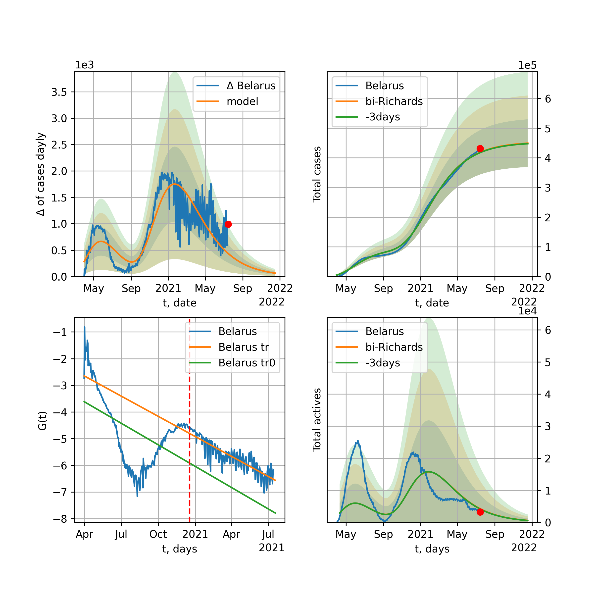

Multi-logistic model of COVID-19 dynamics
Model, code, results
Project maintained by algmaknick Hosted on GitHub Pages — Theme by mattgraham
World

World data at: 2020-07-07
+3 day model MAPE: 0.006410
model: bi-Richards
coeffs: [ 2.18577547e+07 1.18497916e+00 -6.08575857e+01 1.89271444e-02]
S.Korea scenario coeffs: [0.36242246, 2.56241634, 1.84890887, 0.13324732]
rational stdev: 0.077392
forecast at the end of period: +709 days
deltaDaycases: 14088
total cases: 32720008 ± 2532253
total death: 1496223 ± 347385
bi-Richards approximation splitting point: 50
trend coefficient of determination: 0.843433
intercept: -2.340962
slope: -0.033661
trend coefficient of determination: 0.371265
intercept: -3.915177
slope: -0.004546
European Union

European Union data at: 2020-07-07
+3 day model MAPE: 0.002546
model: bi-Richards
coeffs: [ 3.69926809e+05 2.70578687e+00 -6.58290572e+01 1.03771695e-02]
rational stdev: 0.553579
forecast at the end of period: +123 days
deltaDaycases: 161
total cases: 1446554 ± 800782
total death: 147537 ± 245020
bi-Richards approximation splitting point: 83
trend coefficient of determination: 0.943634
intercept: -1.124006
slope: -0.057487
trend coefficient of determination: 0.013579
intercept: -5.633512
slope: -0.002556
Brazil

Brazil data at: 2020-07-07
+3 day model MAPE: 0.002082
model: Richards
coeffs: [ 5.28065524e+06 3.10357751e-01 -2.81977436e+01 6.55883892e-02]
S.Korea scenario coeffs: [0.36242246, 2.56241634, 1.84890887, 0.13324732]
rational stdev: 0.093988
forecast at the end of period: +879 days
deltaDaycases: 1098
total cases: 7029493 ± 660689
total death: 280683 ± 79142
trend coefficient of determination: 0.821439
intercept: -2.713233
slope: -0.019875
Russia

Russia data at: 2020-07-07
+3 day model MAPE: 0.009621
model: Richards
coeffs: [ 8.44693721e+05 2.95610754e+00 -8.12960494e+01 1.12042366e-02]
S.Korea scenario coeffs: [0.36242246, 2.56241634, 1.84890887, 0.13324732]
rational stdev: 0.182470
forecast at the end of period: +529 days
deltaDaycases: 310
total cases: 1122101 ± 204750
total death: 16961 ± 9284
trend coefficient of determination: 0.970396
intercept: -1.552649
slope: -0.031881
USA

USA data at: 2020-07-07
+3 day model MAPE: 0.001219
model: bi-Richards
coeffs: [ 1.12850566e+07 8.87657089e-01 -1.02508544e+01 2.52488878e-02]
rational stdev: 0.277182
forecast at the end of period: +333 days
deltaDaycases: 358
total cases: 13384705 ± 3709999
total death: 578988 ± 481455
bi-Richards approximation splitting point: 90
trend coefficient of determination: 0.944899
intercept: -1.465481
slope: -0.043508
trend coefficient of determination: 0.775208
intercept: -7.074602
slope: 0.022873
Spain

Spain data at: 2020-07-07
+3 day model MAPE: 0.005452
model: bi-Richards
coeffs: [ 1.08011395e+04 1.53837002e+00 -5.88734012e+00 2.38272578e-02]
rational stdev: 0.199586
forecast at the end of period: +25 days
deltaDaycases: 60
total cases: 299802 ± 59836
total death: 28448 ± 17033
bi-Richards approximation splitting point: 90
trend coefficient of determination: 0.956194
intercept: -0.835098
slope: -0.062084
trend coefficient of determination: 0.009415
intercept: -6.689310
slope: -0.003048
Italy

Italy data at: 2020-07-07
+3 day model MAPE: 0.001041
model: Richards
coeffs: [ 2.39364126e+05 6.90936301e+00 -5.67041673e+01 8.34565587e-03]
rational stdev: 0.097365
forecast at the end of period: +11 days
deltaDaycases: 22
total cases: 238982 ± 23268
total death: 34470 ± 10068
trend coefficient of determination: 0.967246
intercept: -1.345286
slope: -0.050142
United Kingdom

United Kingdom data at: 2020-07-07
+3 day model MAPE: 0.001513
model: Richards
coeffs: [ 2.92177848e+05 4.00632482e+00 -6.64864425e+01 1.11692656e-02]
S.Korea scenario coeffs: [0.36242246, 2.56241634, 1.84890887, 0.13324732]
rational stdev: 0.158493
forecast at the end of period: +319 days
deltaDaycases: 200
total cases: 384067 ± 60872
total death: 59539 ± 28309
trend coefficient of determination: 0.978257
intercept: -1.463621
slope: -0.043025
France

France data at: 2020-07-07
+3 day model MAPE: 0.003356
model: bi-Richards
coeffs: [ 3.82895595e+04 3.38113321e+00 -2.32434324e+01 1.15337187e-02]
rational stdev: 0.092518
forecast at the end of period: +11 days
deltaDaycases: 251
total cases: 170772 ± 15799
total death: 30280 ± 8404
bi-Richards approximation splitting point: 86
trend coefficient of determination: 0.904330
intercept: -0.844526
slope: -0.068879
trend coefficient of determination: 0.086048
intercept: -1.548602
slope: -0.045951
Germany

Germany data at: 2020-07-07
+3 day model MAPE: 0.000780
model: bi-Richards
coeffs: [ 2.96618517e+04 5.17735062e+00 -3.16883900e+01 7.56192611e-03]
rational stdev: 0.127211
forecast at the end of period: +25 days
deltaDaycases: 166
total cases: 204238 ± 25981
total death: 9373 ± 3577
bi-Richards approximation splitting point: 94
trend coefficient of determination: 0.950727
intercept: -1.434825
slope: -0.061170
trend coefficient of determination: 0.000009
intercept: -6.291704
slope: -0.000174
Turkey

Turkey data at: 2020-07-07
+3 day model MAPE: 0.001424
model: bi-Richards
coeffs: [ 9.05632142e+04 2.52123098e+00 -9.97785221e+00 1.51422907e-02]
rational stdev: 0.192235
forecast at the end of period: +95 days
deltaDaycases: 60
total cases: 250241 ± 48105
total death: 6331 ± 3651
bi-Richards approximation splitting point: 75
trend coefficient of determination: 0.783228
intercept: -0.999448
slope: -0.058590
trend coefficient of determination: 0.010737
intercept: -5.372351
slope: 0.001274
Iran

Iran data at: 2020-07-07
+3 day model MAPE: 0.008590
model: bi-Richards
coeffs: [ 2.00896323e+05 2.95245738e+00 -1.63750123e+01 1.24058453e-02]
S.Korea scenario coeffs: [0.36242246, 2.56241634, 1.84890887, 0.13324732]
rational stdev: 0.256670
forecast at the end of period: +543 days
deltaDaycases: 75
total cases: 369885 ± 94938
total death: 17962 ± 13830
bi-Richards approximation splitting point: 75
trend coefficient of determination: 0.949245
intercept: -0.920469
slope: -0.055228
trend coefficient of determination: 0.485090
intercept: -3.654591
slope: -0.007235
Canada

Canada data at: 2020-07-07
+3 day model MAPE: 0.002121
model: bi-Richards
coeffs: [2.66568965e+03 3.51751379e+01 2.67860312e+01 3.20092693e-03]
rational stdev: 0.194361
forecast at the end of period: +126 days
deltaDaycases: 0
total cases: 108906 ± 21167
total death: 8935 ± 5209
bi-Richards approximation splitting point: 95
trend coefficient of determination: 0.908781
intercept: -1.307612
slope: -0.037823
trend coefficient of determination: 0.401097
intercept: -2.257350
slope: -0.031122
South Africa

South Africa data at: 2020-07-07
+3 day model MAPE: 0.013359
model: bi-Richards
coeffs: [2.29468914e+07 7.58074455e-02 1.48077326e+02 2.09318339e-01]
rational stdev: 0.291516
forecast at the end of period: +417 days
deltaDaycases: 3851
total cases: 22705948 ± 6619143
total death: 368377 ± 322163
bi-Richards approximation splitting point: 30
trend coefficient of determination: 0.588397
intercept: -1.306311
slope: -0.122648
trend coefficient of determination: 0.506817
intercept: -4.302450
slope: -0.010041
Belgium

Belgium data at: 2020-07-07
+3 day model MAPE: 0.002134
model: Richards
coeffs: [ 6.08159864e+04 7.62544484e+00 -5.14413479e+01 8.31057621e-03]
S.Korea scenario coeffs: [0.36242246, 2.56241634, 1.84890887, 0.13324732]
rational stdev: 0.300768
forecast at the end of period: +235 days
deltaDaycases: 26
total cases: 81588 ± 24539
total death: 12849 ± 11593
trend coefficient of determination: 0.836046
intercept: -1.395838
slope: -0.052597
Peru

Peru data at: 2020-07-07
+3 day model MAPE: 0.011598
model: bi-Richards
coeffs: [9.87332377e+04 7.21085559e+00 5.13060307e+00 8.29396898e-03]
S.Korea scenario coeffs: [0.36242246, 2.56241634, 1.84890887, 0.13324732]
rational stdev: 0.170298
forecast at the end of period: +459 days
deltaDaycases: 6
total cases: 388059 ± 66085
total death: 13741 ± 7020
bi-Richards approximation splitting point: 70
trend coefficient of determination: 0.546288
intercept: -1.445631
slope: -0.026991
trend coefficient of determination: 0.836565
intercept: -0.989548
slope: -0.031273
Netherlands

Netherlands data at: 2020-07-07
+3 day model MAPE: 0.001299
model: bi-Richards
coeffs: [4.67317037e+03 5.96743068e+00 3.16378158e+01 1.39714417e-02]
rational stdev: 0.031299
forecast at the end of period: +11 days
deltaDaycases: 14
total cases: 50826 ± 1590
total death: 6147 ± 577
bi-Richards approximation splitting point: 75
trend coefficient of determination: 0.960878
intercept: -1.319351
slope: -0.062666
trend coefficient of determination: 0.310709
intercept: -0.235990
slope: -0.064492
India

India data at: 2020-07-07
+3 day model MAPE: 0.012537
model: Richards
coeffs: [ 1.16911734e+07 2.85405530e-01 -6.12429289e+01 4.08258208e-02]
S.Korea scenario coeffs: [0.36242246, 2.56241634, 1.84890887, 0.13324732]
rational stdev: 0.375557
forecast at the end of period: +1299 days
deltaDaycases: 4599
total cases: 14497724 ± 5444724
total death: 402445 ± 453423
trend coefficient of determination: 0.720072
intercept: -1.938212
slope: -0.018088
Switzerland

Switzerland data at: 2020-07-07
+3 day model MAPE: 0.001259
model: bi-Richards
coeffs: [3.98250430e+04 5.72962961e-02 1.69685029e+02 4.13542656e+00]
rational stdev: 0.299643
forecast at the end of period: +109 days
deltaDaycases: 0
total cases: 70465 ± 21114
total death: 4279 ± 3846
bi-Richards approximation splitting point: 86
trend coefficient of determination: 0.775601
intercept: -34.192237
slope: -0.237846
trend coefficient of determination: 0.569750
intercept: -55.689940
slope: 0.056678
Ecuador

Ecuador data at: 2020-07-07
+3 day model MAPE: 0.022543
model: Richards
coeffs: [ 7.65357283e+04 1.54979045e+00 -1.25802653e+02 1.56490343e-02]
S.Korea scenario coeffs: [0.36242246, 2.56241634, 1.84890887, 0.13324732]
rational stdev: 0.163730
forecast at the end of period: +599 days
deltaDaycases: 39
total cases: 98969 ± 16204
total death: 7625 ± 3745
trend coefficient of determination: 0.159918
intercept: -2.898953
slope: -0.029032
Portugal

Portugal data at: 2020-07-07
+3 day model MAPE: 0.000935
model: bi-Richards
coeffs: [ 3.14193916e+04 1.81326258e+00 -4.77674999e+01 1.60012741e-02]
rational stdev: 0.050508
forecast at the end of period: +179 days
deltaDaycases: 3
total cases: 59465 ± 3003
total death: 2180 ± 330
bi-Richards approximation splitting point: 61
trend coefficient of determination: 0.904119
intercept: -1.185211
slope: -0.070148
trend coefficient of determination: 0.000062
intercept: -4.977801
slope: -0.000106
Saudi Arabia

Saudi Arabia data at: 2020-07-07
+3 day model MAPE: 0.022685
model: bi-Richards
coeffs: [1.28451957e+05 1.39222818e-01 8.89771817e+01 6.55771064e-01]
rational stdev: 0.167153
forecast at the end of period: +88 days
deltaDaycases: 12
total cases: 260001 ± 43459
total death: 2415 ± 1211
bi-Richards approximation splitting point: 75
trend coefficient of determination: 0.960146
intercept: -5.805195
slope: -0.075023
trend coefficient of determination: 0.728014
intercept: -8.888560
slope: -0.027719
Sweden

Sweden data at: 2020-07-07
+3 day model MAPE: 0.012741
model: bi-Richards
coeffs: [4.14753254e+04 2.11633150e+00 4.16247820e+01 2.55685605e-02]
rational stdev: 0.233756
forecast at the end of period: +74 days
deltaDaycases: 31
total cases: 92281 ± 21571
total death: 6853 ± 4805
bi-Richards approximation splitting point: 90
trend coefficient of determination: 0.856188
intercept: -1.393859
slope: -0.038430
trend coefficient of determination: 0.149266
intercept: 1.488467
slope: -0.057254
Pakistan

Pakistan data at: 2020-07-07
+3 day model MAPE: 0.018369
model: bi-Richards
coeffs: [2.51634136e+05 5.33887553e-02 1.08028831e+02 2.13781430e+00]
S.Korea scenario coeffs: [0.36242246, 2.56241634, 1.84890887, 0.13324732]
rational stdev: 0.379900
forecast at the end of period: +214 days
deltaDaycases: 59
total cases: 342964 ± 130292
total death: 7108 ± 8100
bi-Richards approximation splitting point: 25
trend coefficient of determination: 0.887252
intercept: -3.620720
slope: -0.496168
trend coefficient of determination: 0.975522
intercept: -15.500044
slope: -0.124237
Ireland

Ireland data at: 2020-07-07
+3 day model MAPE: 0.000701
model: Richards
coeffs: [2.53368356e+04 2.12643399e-01 2.08101303e+01 4.38496190e-01]
rational stdev: 0.158718
forecast at the end of period: +81 days
deltaDaycases: 0
total cases: 25336 ± 4021
total death: 1728 ± 822
trend coefficient of determination: 0.956095
intercept: -3.751857
slope: -0.083238
Mexico

Mexico data at: 2020-07-07
+3 day model MAPE: 0.002494
model: Richards
coeffs: [ 9.39580018e+05 5.06451518e-01 -7.79127214e+01 3.41247390e-02]
S.Korea scenario coeffs: [0.36242246, 2.56241634, 1.84890887, 0.13324732]
rational stdev: 0.199068
forecast at the end of period: +1089 days
deltaDaycases: 153
total cases: 1253030 ± 249438
total death: 149676 ± 89387
trend coefficient of determination: 0.915322
intercept: -2.089964
slope: -0.021150
Singapore

Singapore data at: 2020-07-07
+3 day model MAPE: 0.002864
model: bi-Richards
coeffs: [ 3.89961962e+04 4.91857944e+00 -2.93768874e+01 7.82399457e-03]
S.Korea scenario coeffs: [0.36242246, 2.56241634, 1.84890887, 0.13324732]
rational stdev: 0.255395
forecast at the end of period: +459 days
deltaDaycases: 22
total cases: 60567 ± 15468
total death: 34 ± 26
bi-Richards approximation splitting point: 60
trend coefficient of determination: 0.125238
intercept: -2.318872
slope: -0.021611
trend coefficient of determination: 0.627319
intercept: 0.508582
slope: -0.039875
Chile

Chile data at: 2020-07-07
+3 day model MAPE: 0.006951
model: Richards
coeffs: [3.25604809e+05 6.39635937e-02 5.70765893e+01 1.36117232e+00]
S.Korea scenario coeffs: [0.36242246, 2.56241634, 1.84890887, 0.13324732]
rational stdev: 0.118151
forecast at the end of period: +151 days
deltaDaycases: 392
total cases: 429542 ± 50750
total death: 9181 ± 3254
trend coefficient of determination: 0.985830
intercept: -14.939784
slope: -0.078871
Israel

Israel data at: 2020-07-07
+3 day model MAPE: 0.012555
model: bi-Richards
coeffs: [1.29083434e+06 2.37802744e-01 7.45416807e+01 8.97130028e-02]
rational stdev: 0.123122
forecast at the end of period: +319 days
deltaDaycases: 167
total cases: 1300105 ± 160071
total death: 13799 ± 5096
bi-Richards approximation splitting point: 70
trend coefficient of determination: 0.938941
intercept: -1.557537
slope: -0.096374
trend coefficient of determination: 0.733384
intercept: -12.105863
slope: 0.070323
Austria

Austria data at: 2020-07-07
+3 day model MAPE: 0.011900
model: bi-Richards
coeffs: [ 3.51130162e+03 5.56193635e+00 -7.00583544e+01 5.94444063e-03]
rational stdev: 1.172099
forecast at the end of period: +11 days
deltaDaycases: 25
total cases: 18380 ± 21543
total death: 704 ± 2475
bi-Richards approximation splitting point: 83
trend coefficient of determination: 0.868026
intercept: -1.569403
slope: -0.070799
trend coefficient of determination: 0.430241
intercept: -11.520785
slope: 0.051899
Belarus

Belarus data at: 2020-07-07
+3 day model MAPE: 0.003429
model: Richards
coeffs: [ 7.46941417e+04 2.38838841e+00 -7.64087876e+01 1.54086557e-02]
S.Korea scenario coeffs: [0.36242246, 2.56241634, 1.84890887, 0.13324732]
rational stdev: 0.158451
forecast at the end of period: +459 days
deltaDaycases: 26
total cases: 99601 ± 15781
total death: 678 ± 322
trend coefficient of determination: 0.966339
intercept: -1.689701
slope: -0.040140
Japan

Japan data at: 2020-07-07
+3 day model MAPE: 0.022141
model: bi-Richards
coeffs: [ 1.02920535e+05 9.44038596e-01 -1.21803074e+02 1.20105583e-02]
rational stdev: 0.673383
forecast at the end of period: +389 days
deltaDaycases: 47
total cases: 114802 ± 77306
total death: 5619 ± 11351
bi-Richards approximation splitting point: 115
trend coefficient of determination: 0.000985
intercept: -3.640270
slope: -0.001921
trend coefficient of determination: 0.571769
intercept: -10.152627
slope: 0.030670
China

China data at: 2020-07-07
+3 day model MAPE: 0.000487
model: bi-Richards
coeffs: [1.44203546e+03 7.20467321e+01 2.92299753e-01 1.22849241e-03]
rational stdev: 0.094331
forecast at the end of period: +11 days
deltaDaycases: 0
total cases: 83215 ± 7849
total death: 4614 ± 1305
bi-Richards approximation splitting point: 110
trend coefficient of determination: 0.821008
intercept: -1.965788
slope: -0.082654
trend coefficient of determination: 0.139219
intercept: -13.729319
slope: 0.030278
Qatar

Qatar data at: 2020-07-07
+3 day model MAPE: 0.000419
model: Richards
coeffs: [1.11582673e+05 8.53892186e-02 4.81969411e+01 6.66987858e-01]
S.Korea scenario coeffs: [0.36242246, 2.56241634, 1.84890887, 0.13324732]
rational stdev: 0.132740
forecast at the end of period: +193 days
deltaDaycases: 144
total cases: 143622 ± 19064
total death: 190 ± 75
trend coefficient of determination: 0.972801
intercept: -6.946309
slope: -0.058648
Poland

Poland data at: 2020-07-07
+3 day model MAPE: 0.004458
model: bi-Richards
coeffs: [ 2.42221946e+04 2.93128912e+00 -1.96890473e+01 1.36253558e-02]
rational stdev: 0.110626
forecast at the end of period: +109 days
deltaDaycases: 3
total cases: 42966 ± 4753
total death: 1803 ± 598
bi-Richards approximation splitting point: 60
trend coefficient of determination: 0.714028
intercept: -1.171516
slope: -0.047682
trend coefficient of determination: 0.689573
intercept: -2.770375
slope: -0.017865
UAE

UAE data at: 2020-07-07
+3 day model MAPE: 0.010816
model: bi-Richards
coeffs: [ 5.29452911e+03 3.18835063e+01 -1.67770554e+01 2.68599769e-03]
rational stdev: 0.115158
forecast at the end of period: +179 days
deltaDaycases: 0
total cases: 58347 ± 6719
total death: 361 ± 124
bi-Richards approximation splitting point: 95
trend coefficient of determination: 0.941328
intercept: -1.906752
slope: -0.032576
trend coefficient of determination: 0.219199
intercept: -8.912336
slope: 0.043921
Romania

Romania data at: 2020-07-06
+3 day model MAPE: 0.016411
model: bi-Richards
coeffs: [3.16351329e+04 6.42345326e-01 4.49571567e+01 5.70472675e-02]
rational stdev: 0.148609
forecast at the end of period: +124 days
deltaDaycases: 16
total cases: 52487 ± 7800
total death: 3175 ± 1415
bi-Richards approximation splitting point: 87
trend coefficient of determination: 0.932494
intercept: -1.511005
slope: -0.048026
trend coefficient of determination: 0.463489
intercept: -7.067996
slope: 0.019310
Panama

Panama data at: 2020-07-07
+3 day model MAPE: 0.013494
model: bi-Richards
coeffs: [6.34794937e+04 1.89317690e+00 3.27201642e+00 1.99179621e-02]
rational stdev: 0.209521
forecast at the end of period: +109 days
deltaDaycases: 34
total cases: 76068 ± 15937
total death: 1508 ± 947
bi-Richards approximation splitting point: 70
trend coefficient of determination: 0.874671
intercept: -1.309741
slope: -0.048701
trend coefficient of determination: 0.037723
intercept: -4.135819
slope: 0.003630
Ukraine

Ukraine data at: 2020-07-07
+3 day model MAPE: 0.011874
model: bi-Richards
coeffs: [4.19766519e+04 2.06687135e-01 7.79391976e+01 2.94915715e-01]
rational stdev: 0.158240
forecast at the end of period: +109 days
deltaDaycases: 2
total cases: 69254 ± 10958
total death: 1794 ± 851
bi-Richards approximation splitting point: 65
trend coefficient of determination: 0.828317
intercept: -2.591958
slope: -0.070906
trend coefficient of determination: 0.092442
intercept: -6.576788
slope: -0.004642
Indonesia

Indonesia data at: 2020-07-06
+3 day model MAPE: 0.021358
model: bi-Richards
coeffs: [ 1.19894567e+05 1.71196900e+00 -2.55637759e+01 1.67051501e-02]
rational stdev: 0.147215
forecast at the end of period: +208 days
deltaDaycases: 14
total cases: 166518 ± 24514
total death: 8308 ± 3669
bi-Richards approximation splitting point: 75
trend coefficient of determination: 0.798239
intercept: -1.993184
slope: -0.028874
trend coefficient of determination: 0.002346
intercept: -3.805177
slope: -0.000812
Bangladesh

Bangladesh data at: 2020-07-07
+3 day model MAPE: 0.373626
model: Richards
coeffs: [ 1.15736925e+02 6.45824667e+00 -4.20178539e+01 1.27654554e-02]
rational stdev: 0.371727
forecast at the end of period: +347 days
deltaDaycases: 0
total cases: 115 ± 43
total death: 1 ± 1
trend coefficient of determination: 0.020746
intercept: -4.180817
slope: 0.041430
South_Korea

South Korea data at: 2020-07-07
+3 day model MAPE: 0.001040
model: bi-Richards
coeffs: [ 7.77172138e+03 2.02736972e+00 -1.37064968e+02 8.62445287e-03]
rational stdev: 0.150653
forecast at the end of period: +109 days
deltaDaycases: 17
total cases: 17099 ± 2576
total death: 367 ± 165
bi-Richards approximation splitting point: 73
trend coefficient of determination: 0.865754
intercept: -1.340682
slope: -0.089483
trend coefficient of determination: 0.442717
intercept: -8.578830
slope: 0.023710
Moldova

Moldova data at: 2020-07-07
+3 day model MAPE: 0.013025
model: bi-Richards
coeffs: [1.46880294e+04 9.49272349e-02 9.35865816e+01 8.57490844e-01]
rational stdev: 0.156557
forecast at the end of period: +137 days
deltaDaycases: 0
total cases: 20993 ± 3286
total death: 697 ± 327
bi-Richards approximation splitting point: 60
trend coefficient of determination: 0.924040
intercept: -3.451432
slope: -0.143913
trend coefficient of determination: 0.626598
intercept: -9.065798
slope: -0.029802
Denmark

Denmark data at: 2020-07-07
+3 day model MAPE: 0.001477
model: bi-Richards
coeffs: [7.71932763e+02 1.57672666e-01 1.01258075e+02 9.19442622e-01]
rational stdev: 0.245528
forecast at the end of period: +60 days
deltaDaycases: 0
total cases: 13034 ± 3200
total death: 615 ± 452
bi-Richards approximation splitting point: 100
trend coefficient of determination: 0.858132
intercept: -6.891167
slope: -0.090481
trend coefficient of determination: 0.085863
intercept: -6.289381
slope: -0.083282
Serbia

Serbia data at: 2020-07-07
+3 day model MAPE: 0.000391
model: bi-Richards
coeffs: [7.92610544e+05 1.78332102e-01 8.99837103e+01 1.03617121e-01]
rational stdev: 0.589337
forecast at the end of period: +515 days
deltaDaycases: 7
total cases: 803657 ± 473625
total death: 15862 ± 28044
bi-Richards approximation splitting point: 82
trend coefficient of determination: 0.925947
intercept: -1.421381
slope: -0.067676
trend coefficient of determination: 0.778144
intercept: -10.907436
slope: 0.051587
Kuwait

Kuwait data at: 2020-07-07
+3 day model MAPE: 0.020228
model: bi-Richards
coeffs: [ 3.82100085e+04 6.83088460e+00 -5.48977599e+00 7.62290216e-03]
S.Korea scenario coeffs: [0.36242246, 2.56241634, 1.84890887, 0.13324732]
rational stdev: 0.097071
forecast at the end of period: +368 days
deltaDaycases: 35
total cases: 72358 ± 7023
total death: 532 ± 154
bi-Richards approximation splitting point: 90
trend coefficient of determination: 0.163848
intercept: -2.525587
slope: -0.009616
trend coefficient of determination: 0.030380
intercept: -3.877123
slope: -0.003770
Philippines

Philippines data at: 2020-07-06
+3 day model MAPE: 0.070702
model: bi-Richards
coeffs: [ 1.51943242e+05 1.24679479e+00 -7.05933399e+01 1.64003120e-02]
rational stdev: 0.176818
forecast at the end of period: +180 days
deltaDaycases: 117
total cases: 157625 ± 27870
total death: 4432 ± 2350
bi-Richards approximation splitting point: 60
trend coefficient of determination: 0.656493
intercept: -1.514205
slope: -0.049089
trend coefficient of determination: 0.038227
intercept: -4.344180
slope: 0.004851
Norway

Norway data at: 2020-07-07
+3 day model MAPE: 0.000322
model: bi-Richards
coeffs: [7.14837669e+02 5.05746320e+00 2.02614935e+01 1.07674822e-02]
rational stdev: 0.157552
forecast at the end of period: +11 days
deltaDaycases: 6
total cases: 9033 ± 1423
total death: 253 ± 119
bi-Richards approximation splitting point: 105
trend coefficient of determination: 0.918517
intercept: -1.140098
slope: -0.061743
trend coefficient of determination: 0.022163
intercept: -4.913163
slope: -0.016783
Czechia

Czechia data at: 2020-07-07
+3 day model MAPE: 0.003363
model: bi-Richards
coeffs: [ 5.14574080e+04 4.26889787e-01 -7.71017768e+01 3.06165009e-02]
rational stdev: 0.488026
forecast at the end of period: +389 days
deltaDaycases: 10
total cases: 58661 ± 28628
total death: 1623 ± 2376
bi-Richards approximation splitting point: 61
trend coefficient of determination: 0.444026
intercept: -1.538596
slope: -0.056796
trend coefficient of determination: 0.137287
intercept: -6.287395
slope: 0.010075
Colombia

Colombia data at: 2020-07-07
+3 day model MAPE: 0.001586
model: bi-Richards
coeffs: [ 1.59312596e+06 3.60628600e-01 -4.46117156e+01 3.96340093e-02]
S.Korea scenario coeffs: [0.36242246, 2.56241634, 1.84890887, 0.13324732]
rational stdev: 0.188721
forecast at the end of period: +1299 days
deltaDaycases: 322
total cases: 2105584 ± 397368
total death: 73724 ± 41739
bi-Richards approximation splitting point: 41
trend coefficient of determination: 0.763667
intercept: -1.115383
slope: -0.065678
trend coefficient of determination: 0.471003
intercept: -3.027611
slope: -0.006762
Australia

Australia data at: 2020-07-07
+3 day model MAPE: 0.041944
model: bi-Richards
coeffs: [6.04434170e+04 4.33152815e-02 1.88321268e+02 4.24413065e+00]
rational stdev: 0.076011
forecast at the end of period: +144 days
deltaDaycases: 0
total cases: 67171 ± 5105
total death: 801 ± 182
bi-Richards approximation splitting point: 80
trend coefficient of determination: 0.658429
intercept: -34.504435
slope: -0.164589
trend coefficient of determination: 0.782889
intercept: -51.702046
slope: 0.082866
Malaysia

Malaysia data at: 2020-07-06
+3 day model MAPE: 0.000747
model: bi-Richards
coeffs: [2.10422669e+03 1.31104242e-01 8.18941345e+01 1.00512039e+00]
S.Korea scenario coeffs: [0.36242246, 2.56241634, 1.84890887, 0.13324732]
rational stdev: 0.134040
forecast at the end of period: +12 days
deltaDaycases: 0
total cases: 8658 ± 1160
total death: 120 ± 48
bi-Richards approximation splitting point: 70
trend coefficient of determination: 0.805849
intercept: -5.751809
slope: -0.134350
trend coefficient of determination: 0.575029
intercept: -9.322966
slope: -0.057305
Dominican Republic

Dominican Republic data at: 2020-07-07
+3 day model MAPE: 0.004322
model: bi-Richards
coeffs: [1.23312997e+05 3.82218796e-01 3.28074361e+01 7.16021827e-02]
rational stdev: 0.102556
forecast at the end of period: +459 days
deltaDaycases: 0
total cases: 152575 ± 15647
total death: 3259 ± 1002
bi-Richards approximation splitting point: 80
trend coefficient of determination: 0.754717
intercept: -2.609326
slope: -0.030978
trend coefficient of determination: 0.010258
intercept: -4.197728
slope: -0.004047
Egypt

Egypt data at: 2020-07-07
+3 day model MAPE: 0.007028
model: Richards
coeffs: [9.45825532e+04 5.36836810e-02 9.27543331e+01 1.41868822e+00]
S.Korea scenario coeffs: [0.36242246, 2.56241634, 1.84890887, 0.13324732]
rational stdev: 0.231345
forecast at the end of period: +179 days
deltaDaycases: 177
total cases: 120941 ± 27979
total death: 5460 ± 3789
trend coefficient of determination: 0.958902
intercept: -10.428000
slope: -0.090973
Finland

Finland data at: 2020-07-07
+3 day model MAPE: 0.000030
model: bi-Richards
coeffs: [-3.02621126e+02 1.20801285e+01 4.26862328e+00 5.66971178e-03]
rational stdev: 0.133371
forecast at the end of period: +25 days
deltaDaycases: 1
total cases: 7337 ± 978
total death: 332 ± 132
bi-Richards approximation splitting point: 86
trend coefficient of determination: 0.874823
intercept: -1.467552
slope: -0.048577
trend coefficient of determination: 0.127654
intercept: -2.939204
slope: -0.039177
Morocco

Morocco data at: 2020-07-07
+3 day model MAPE: 0.045239
model: bi-Richards
coeffs: [7.32674375e+03 9.82257751e+00 5.64126355e+01 1.13697501e-02]
rational stdev: 0.063699
forecast at the end of period: +25 days
deltaDaycases: 22
total cases: 16698 ± 1063
total death: 274 ± 52
bi-Richards approximation splitting point: 75
trend coefficient of determination: 0.860980
intercept: -1.452709
slope: -0.047810
trend coefficient of determination: 0.335913
intercept: -8.082419
slope: 0.038088
Argentina

Argentina data at: 2020-07-07
+3 day model MAPE: 0.012587
model: bi-Richards
coeffs: [1.37323630e+06 1.41139478e-01 5.81776198e+01 1.15234799e-01]
rational stdev: 0.153882
forecast at the end of period: +459 days
deltaDaycases: 42
total cases: 1373237 ± 211316
total death: 27061 ± 12492
bi-Richards approximation splitting point: 38
trend coefficient of determination: 0.124580
intercept: -1.795615
slope: -0.081071
trend coefficient of determination: 0.068892
intercept: -4.105299
slope: -0.002522
Algeria

Algeria data at: 2020-07-07
+3 day model MAPE: 0.015287
model: bi-Richards
coeffs: [-5.67123952e+02 5.25094082e-01 7.13682869e+01 1.65034544e+00]
rational stdev: 0.188879
forecast at the end of period: +137 days
deltaDaycases: 6
total cases: 20425 ± 3858
total death: 1171 ± 663
bi-Richards approximation splitting point: 88
trend coefficient of determination: 0.901358
intercept: -11.606330
slope: -0.108486
trend coefficient of determination: 0.718607
intercept: -22.181535
slope: 0.024651
Luxembourg

Luxembourg data at: 2020-07-07
+3 day model MAPE: 0.012140
model: bi-Richards
coeffs: [4.62384635e+03 5.56708714e-02 1.49088593e+02 7.38915520e+00]
rational stdev: 0.159669
forecast at the end of period: +109 days
deltaDaycases: 0
total cases: 8510 ± 1358
total death: 203 ± 97
bi-Richards approximation splitting point: 76
trend coefficient of determination: 0.634107
intercept: -37.807564
slope: -0.533426
trend coefficient of determination: 0.438312
intercept: -72.611186
slope: 0.047447
Thailand

Thailand data at: 2020-07-07
+3 day model MAPE: 0.001033
model: bi-Richards
coeffs: [ 2.36297187e+02 6.79186656e+00 -5.00087489e+01 6.41698919e-03]
rational stdev: 0.068779
forecast at the end of period: +25 days
deltaDaycases: 0
total cases: 3217 ± 221
total death: 58 ± 11
bi-Richards approximation splitting point: 60
trend coefficient of determination: 0.843224
intercept: -1.239753
slope: -0.117516
trend coefficient of determination: 0.000301
intercept: -7.798488
slope: 0.001702
Hungary

Hungary data at: 2020-07-07
+3 day model MAPE: 0.001106
model: Richards
coeffs: [ 4.20782185e+03 3.94895011e+00 -4.63187566e+01 1.38912313e-02]
rational stdev: 0.395032
forecast at the end of period: +11 days
deltaDaycases: 1
total cases: 4184 ± 1652
total death: 585 ± 693
trend coefficient of determination: 0.895717
intercept: -1.252247
slope: -0.050697
Greece

Greece data at: 2020-07-07
+3 day model MAPE: 0.007752
model: bi-Richards
coeffs: [1.23374243e+03 2.30569158e+00 1.58523687e+01 1.84661760e-02]
rational stdev: 0.125555
forecast at the end of period: +25 days
deltaDaycases: 9
total cases: 3890 ± 488
total death: 209 ± 78
bi-Richards approximation splitting point: 92
trend coefficient of determination: 0.844635
intercept: -1.259218
slope: -0.064545
trend coefficient of determination: 0.126403
intercept: -8.768532
slope: 0.028860
Iraq

Iraq data at: 2020-07-07
+3 day model MAPE: 0.002307
model: bi-Richards
coeffs: [1.34965772e+05 2.09762051e-01 5.54640083e+01 2.34695682e-01]
S.Korea scenario coeffs: [0.36242246, 2.56241634, 1.84890887, 0.13324732]
rational stdev: 0.053000
forecast at the end of period: +361 days
deltaDaycases: 71
total cases: 182526 ± 9673
total death: 7574 ± 1204
bi-Richards approximation splitting point: 60
trend coefficient of determination: 0.026209
intercept: -5.108157
slope: -0.005012
trend coefficient of determination: 0.906617
intercept: -2.039922
slope: -0.041402
Croatia

Croatia data at: 2020-07-07
+3 day model MAPE: 0.006343
model: bi-Richards
coeffs: [1.74311027e+03 1.59701896e+00 7.51986051e+01 7.32218586e-02]
rational stdev: 0.045358
forecast at the end of period: +39 days
deltaDaycases: 1
total cases: 3973 ± 180
total death: 137 ± 18
bi-Richards approximation splitting point: 80
trend coefficient of determination: 0.906402
intercept: -1.504786
slope: -0.106832
trend coefficient of determination: 0.783983
intercept: -27.808159
slope: 0.226600
Iceland

Iceland data at: 2020-07-07
+3 day model MAPE: 0.034811
model: bi-Richards
coeffs: [ 3.59133331e+01 1.24799049e-02 -8.67615337e+00 1.88163531e-02]
rational stdev: 0.102991
forecast at the end of period: +39 days
deltaDaycases: 0
total cases: 1806 ± 186
total death: 9 ± 2
bi-Richards approximation splitting point: 66
trend coefficient of determination: 0.839754
intercept: -0.284488
slope: -0.126092
trend coefficient of determination: 0.632003
intercept: -15.300619
slope: 0.069886
Estonia

Estonia data at: 2020-07-07
+3 day model MAPE: 0.001000
model: bi-Richards
coeffs: [2.41458928e+02 9.43335676e-02 7.74171831e+01 2.06076903e+00]
rational stdev: 0.094058
forecast at the end of period: +11 days
deltaDaycases: 0
total cases: 1991 ± 187
total death: 68 ± 19
bi-Richards approximation splitting point: 50
trend coefficient of determination: 0.887453
intercept: -12.707554
slope: -0.182694
trend coefficient of determination: 0.370478
intercept: -18.596020
slope: -0.042749
Bulgaria

Bulgaria data at: 2020-07-07
+3 day model MAPE: 0.018552
model: bi-Richards
coeffs: [5.40345150e+03 5.49371631e+00 3.43908032e+01 1.21646986e-02]
rational stdev: 0.104993
forecast at the end of period: +39 days
deltaDaycases: 19
total cases: 8579 ± 900
total death: 357 ± 112
bi-Richards approximation splitting point: 71
trend coefficient of determination: 0.674286
intercept: -2.049246
slope: -0.038887
trend coefficient of determination: 0.442560
intercept: -7.741814
slope: 0.038826
New Zealand

New Zealand data at: 2020-07-07
+3 day model MAPE: 0.001084
model: bi-Richards
coeffs: [ 3.62976644e+02 1.75763770e+00 -1.56514081e+02 8.71350492e-03]
rational stdev: 0.033901
forecast at the end of period: +11 days
deltaDaycases: 1
total cases: 1552 ± 52
total death: 22 ± 2
bi-Richards approximation splitting point: 90
trend coefficient of determination: 0.914542
intercept: -0.907900
slope: -0.133687
trend coefficient of determination: 0.001271
intercept: -6.875676
slope: -0.004517
Slovenia

Slovenia data at: 2020-07-06
+3 day model MAPE: 0.028151
model: bi-Richards
coeffs: [1.39910818e+04 1.00896979e+00 4.65223249e+01 2.97614181e-02]
rational stdev: 0.170767
forecast at the end of period: +222 days
deltaDaycases: 2
total cases: 15403 ± 2630
total death: 996 ± 510
bi-Richards approximation splitting point: 75
trend coefficient of determination: 0.905441
intercept: -0.869639
slope: -0.095628
trend coefficient of determination: 0.719541
intercept: -17.220414
slope: 0.104131
Slovakia

Slovakia data at: 2020-07-07
+3 day model MAPE: 0.001982
model: bi-Richards
coeffs: [1.61742418e+04 3.50238849e-01 3.58199445e+01 5.38458334e-02]
rational stdev: 0.198087
forecast at the end of period: +277 days
deltaDaycases: 7
total cases: 17293 ± 3425
total death: 274 ± 162
bi-Richards approximation splitting point: 85
trend coefficient of determination: 0.851511
intercept: -1.093332
slope: -0.085579
trend coefficient of determination: 0.353669
intercept: -15.707899
slope: 0.090014
Lithuania

Lithuania data at: 2020-07-07
+3 day model MAPE: 0.001821
model: bi-Richards
coeffs: [4.30216093e+02 9.96464780e-01 2.64124613e+00 5.01782696e-02]
rational stdev: 0.135911
forecast at the end of period: +3 days
deltaDaycases: 1
total cases: 1847 ± 251
total death: 79 ± 32
bi-Richards approximation splitting point: 48
trend coefficient of determination: 0.880025
intercept: -1.036780
slope: -0.092499
trend coefficient of determination: 0.370576
intercept: -4.170653
slope: -0.023834
Latvia

Latvia data at: 2020-07-07
+3 day model MAPE: 0.002079
model: Richards
coeffs: [ 1.11854783e+03 9.15092395e+00 -8.00512286e+01 5.72648112e-03]
S.Korea scenario coeffs: [0.36242246, 2.56241634, 1.84890887, 0.13324732]
rational stdev: 0.228389
forecast at the end of period: +214 days
deltaDaycases: 1
total cases: 1430 ± 326
total death: 37 ± 25
trend coefficient of determination: 0.637448
intercept: -1.890555
slope: -0.051006
Cyprus

Cyprus data at: 2020-07-07
+3 day model MAPE: 0.001029
model: bi-Richards
coeffs: [ 9.79002476e+01 7.84649409e+00 -3.14195911e+00 8.28647180e-03]
rational stdev: 0.105881
forecast at the end of period: +11 days
deltaDaycases: 0
total cases: 1005 ± 106
total death: 19 ± 6
bi-Richards approximation splitting point: 70
trend coefficient of determination: 0.728682
intercept: -1.369867
slope: -0.075144
trend coefficient of determination: 0.103535
intercept: -4.311953
slope: -0.028157
Malta

Malta data at: 2020-07-07
+3 day model MAPE: 0.001615
model: bi-Richards
coeffs: [2.09256379e+02 1.48480386e+01 2.57464768e-01 5.80053600e-03]
rational stdev: 0.183740
forecast at the end of period: +11 days
deltaDaycases: 0
total cases: 669 ± 122
total death: 8 ± 4
bi-Richards approximation splitting point: 50
trend coefficient of determination: 0.728228
intercept: -0.934760
slope: -0.094285
trend coefficient of determination: 0.477035
intercept: -1.715028
slope: -0.051660
Sri Lanka

Sri Lanka data at: 2020-07-07
+3 day model MAPE: 0.003634
model: Richards
coeffs: [2.07051730e+03 4.15080698e-02 6.51914813e+01 2.75459103e+00]
S.Korea scenario coeffs: [0.36242246, 2.56241634, 1.84890887, 0.13324732]
rational stdev: 0.119919
forecast at the end of period: +95 days
deltaDaycases: 3
total cases: 2723 ± 326
total death: 14 ± 5
trend coefficient of determination: 0.877174
intercept: -16.184143
slope: -0.115477
References
- Worldometers COVID-19 Coronavirus Pandemic
- Su COVID-19 susijusi gyventojų ir verslo statistika
- Bi-logistic growth
- Least squares
- scikit-learn
- scipy.org
- European Centre for Disease Prevention and Control An agency of the European Union
- Aaron Miller, Mac Josh Reandelar, Kimberly Fasciglione, Violeta Roumenova, Yan Li, Gonzalo H Otazu, Correlation between universal BCG vaccination policy and reduced morbidity and mortality for COVID-19: an epidemiological study, https://doi.org/10.1101/2020.03.24.20042937
- c19.se